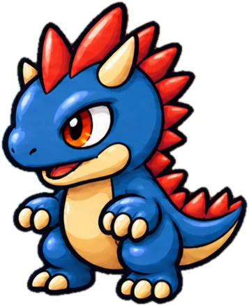

 FireDragon
FireDragonTap a stage to read its story.
Scaldrak is a stocky blue-scaled lizard whose back is lined with a vivid row of red and orange spines that glow with internal heat. It scrambles across the Lava Crater's cooled rock shelves with remarkable grip, using its broad claws to anchor against sudden steam vents. The spines puff up double when it is startled, making it look twice as fierce as it is. Scaldrak has a habit of licking the warm stones to taste where the heat is strongest, marking good basking spots with a single claw-scratch so it can find them again.
Field note: Blazlet scratches a single claw-mark on each new basking stone to remember it - the crater walls are covered in its tiny record-keeping.
Lava Crater. Scaldrak and its family are found in the Lava Crater. See everyone who lives there.
Share a Bond Food that matches its types to become friends. Scaldrak loves:
A Bond Food is not a trick. It joins your spirit with the Kimuro's spirit, and only when it chooses you.
Print the Kimuro adventure packs: mazes, cards, a board game and Bond Mark medals.
See the printable packs